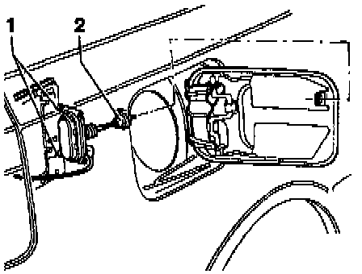

Fuel Door Release Actuator: Service and Repair
Removing Filler Flap Activator/Actuator:

Central Locking System Pump and Control Module (V69) should be removed and luggage compartment trim loosened.
- Loosen Phillips-head screws.
- Pull activator with locking rod out of bump stop -2-.
- Disconnect bi-pressure line from activator.